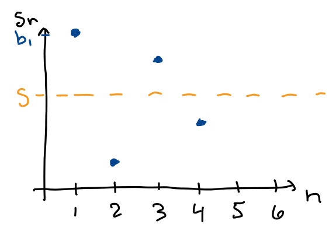

MATH 1336: Calculus III
Section 5.5: Alternating Series & Absolute Convergence
Sections 5.5 & 5.6 - More Series Tests!: _______________________________________
In these sections, we’ll learn tests that can be applied to series that may have some negative terms.
Alternating Series Test (AST):_____________________________________________________
If an alternating series can be written in one of the following forms:
-OR-
and satisfies both of the conditions listed below, then the series is convergent.
Alternating Series Estimation/Remainder Theorem:_________________________
If is the
sum of a convergent alternating series
then

Absolute & Conditional Convergence: __________________________________________
A series is called absolutely
convergent if the series
is convergent.
A series is called conditionally convergent if it is convergent, but not absolutely convergent.
Theorem 5.15:
If a series
converges, then
converges.
Follow-up Question: How many terms would we need to use to obtain an estimate for the sum of the series that is within of the exact value?
Be sure to fully justify your reasoning as a part of your solutions.
The answers are upside-down on the bottom of this page.
For Problems 1-4, determine whether the series is absolutely convergent, conditionally convergent, or divergent.
Answers:
Problem 1: Conditionally Convergent, Problem 2: Absolutely Convergent,
Problem 3: Divergent, Problem 4: Absolutely Convergent